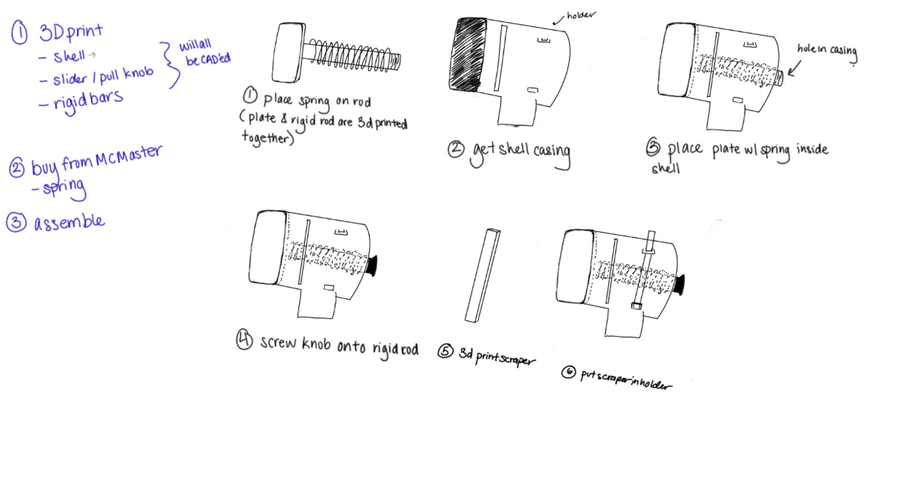

← Back to Portfolio
Intro to Mechanical Design
Team: Big Red Stompers · MAE 2250
Client Pitch
Team: Big Red Stompers Clients: Cornell CALS Extension / E&J Gallo Winery / National Grape
Problem Statement
Spotted lanternflies (SLF) mainly target grapevines. As a result, grape farmers are trying to manage SLF populations in vineyards and nearby trees. SLF egg masses contain around 30-60 eggs, creating rapid population growth that affects later growing seasons. Current SLF population reduction methods, such as netting and manual egg removal are difficult to scale across larger vineyards.
Impact
Elimination of SLF eggs prevents the development of adult populations causing the most damage to vineyards. The average SLFs per vine starts low, increasing sharply following the transition from nymph to adult stages (Figure 1). As a result, attacking the root cause would protect regions like Lake Erie and the Finger Lakes from losses between $1.5 million in year one and $8.8 million by year three of infestation (Hayes).
Proposed Concept: Stomp n' Scrape
What it is: Handheld egg removal device.
How it would be used: Designed to crush SLF egg mass shells and immediately scrape them into a rubbing-alcohol-filled vessel to prevent hatching.
Why it's better than the status quo:
- Reduces the chance of leaving viable eggs behind.
- Minimizes mess and user discomfort by sealing egg material instantly.
- Improved output and efficiency compared to manual scraping alone.
End-of-semester proof-of-concept: A functional prototype with a crushing feature, integrated scraper, and removable alcohol container, fabricated using 3D-printed components and accessible materials, and tested on simulated SLF egg masses to evaluate effectiveness and ease of cleaning.
Key Risks / Unknowns
- 1 - Egg masses harden, making it difficult to ensure they are fully damaged. Two methods to kill the egg masses: crushing them and then scraping them into rubbing alcohol to kill the remaining ones.
- 2 - Public aversion to kill/interact with SLF, as crushing egg masses may be off-putting. Test with user trials and gauge user comfort.
- 3 - Many eggs are laid on high surfaces; 98% of eggs are found at unreachable heights (+10 feet) on trees (Krawczyk). Test attachments to extendable tools for users to reach higher egg masses.
Questions for Client
-
What is preventing you from currently targeting egg masses? Is it location, time or resources?
Decision affected: This would affect the aspects we want to emphasize in our design, like making it accessible to higher areas of the tree and ease to clean, based on client demand.
-
Are there methods for reaching high areas that you are currently using?
Decision affected: This would affect whether our product must account for reaching high-up areas, or if it can be used with existing tools.
-
How much would you need to reduce SLF at the egg stage to be considered effective?
Decision affected: This would affect how we determine the force needed and how we design our crushing/scraping mechanism.
References
Design Intent and Functionality
The prototype is intended to combine three main functions into one handheld device:
- Scraping: the scraper removes the spotted lanternfly egg mass off the surface.
- Crushing / Stomping: a spring-loaded internal stomper compresses the egg mass material to destroy the eggs.
- Collection: the lower opening funnels egg residue into an attached bottle for containment and later neutralization.
Parts List and Fabrication Details
The functional prototype consists of the following parts:
- Housing – 3D printed at RPL; contains the sliding rail, supports the scraper assembly, and connects to the bottle interface.
- Stomper Face – 3D printed at RPL; translates along the internal rail and compresses the egg mass during actuation.
- Compression Spring – initially tested using McMaster spring 8969T983; additional spring options evaluated based on force and travel requirements.
- Scraper Blade – thin metal or hard plastic blade seated in a channel on the housing; interfaces with the egg mass surface.
- Bottle Interface – 3D printed funnel adapter connecting the housing exit to a standard rubbing alcohol bottle for containment.
- Fasteners / Assembly Hardware – standard hardware (screws, pins) used to secure printed components during testing.
Design Sketches and CAD Models

Components and Function Illustration

CAD Sketch #1: View of the Whole Assembly in CAD

CAD Sketch #2: Scraper and Inside Assembly

Assembly Process
Assembly Process
The prototype is assembled in the following order:
- Prepare the spring-and-rod subassembly
Place the compression spring onto the rigid rod. The front circular plate and the rigid rod are designed as a single 3D-printed part, so the spring is seated directly onto this rod-and-plate subassembly.
- Prepare the shell casing
Take the printed shell / housing and inspect the rear opening to confirm that the spring-loaded subassembly can be inserted without interference.
- Insert the spring-loaded plate into the housing
Slide the plate-with-spring subassembly into the shell casing through the rear opening so that the spring and rod align with the internal axis of the housing.
- Attach the pull knob
Screw the pull knob onto the exposed end of the rigid rod at the back of the housing. This creates the user-actuated interface for compressing the spring.
- Install the scraper
Thread the scraper through the back opening of the housing and position it so that it aligns with the front opening where the egg mass will be contacted.
- Attach the scraper plate to the rigid rod
Secure the scraper plate to the rigid rod so that motion of the rod and spring mechanism drives the scraper/stomping action.
Design Test
Test 1: Sliding Rail Motion and Interference
Part being tested: Housing rail and slider/stomper interface.
What is being tested:
This test evaluates whether the slider can move through its intended range of motion without excessive friction, jamming, or interference. Because the product relies on repeated manual actuation, low-friction motion is critical for usability and repeatability.
How it was tested:
The force required to initiate motion was measured using a spring-force ruler / spring scale attached to the slider. In addition, our 5 team members operated the slider and rated ease of use on a scale from 1 to 10, where 1 indicates very easy operation and 10 indicates very difficult operation.
Results:
During assembly and initial actuation, the rail exhibited excessive friction due to insufficient CAD tolerance and printing inaccuracy. The force required to initiate motion was 10 N. The mean user difficulty score before modification was 7/10, indicating poor usability. After sanding the rail surfaces, the slider moved more smoothly and the mean user difficulty score improved to 5/10, but this remained outside the desired usability range of 1–4.
Conclusion / design changes for next prototype:
The next prototype will increase clearance tolerances between the housing and slider by 5mm and switch from PLA to PETG to reduce print irregularities and improve sliding performance. Additional testing over repeated cycles will be conducted to confirm that the rail does not bind over time.
Test 2: Spring Mechanism Force and Usability
Part being tested: Compression spring and stomping mechanism.
What is being tested:
This test evaluates whether the spring can be compressed by hand while still supplying enough force to help crush the egg mass. The design target from earlier work was a force in the approximate 50–70 N range, and the spring constant needed to be appropriate for the intended user displacement.
How it was tested:
The team first evaluated the McMaster spring by manually compressing it through the intended actuation path and observing whether a user could reasonably generate sufficient displacement. The team then tested a workshop spring and estimated its spring constant using Hooke’s Law from an applied 500 g load and the resulting displacement of 1.5 in.
Results:
The McMaster spring was too stiff for practical hand use and could only be compressed by several millimeters, which was far below the required displacement. A replacement spring from the workshop displaced 1.5 in under a 500 g force, corresponding to a spring constant of approximately 129 N/m or 0.74 lb/in. This value was close to the team’s rough estimated range, but later trials suggested that to more confidently generate sufficient crushing force with a displacement of about 2 in (~50 mm), the design would require a higher spring constant of approximately 3–3.5 lbf/in.
Conclusion / design changes for next prototype:
The next prototype will use a spring with a slightly higher spring constant than the workshop spring while still remaining hand-operable. The team will also redesign the rod/attachment geometry to improve load transfer between the spring and stomper.
Success Criteria
Our project aims to create a portable product that provides a faster, cleaner, and more effective way to destroy spotted lanternfly egg masses than current scraping methods. For the final prototype, success will be evaluated using the following quantitative criteria.
- Portability
The device must weigh no more than 0.5 kg and have a length no greater than 20 cm without the bottle attachment and 30 cm with the bottle attachment. This criterion assesses portability and ease of handling. It will be measured using a digital scale and ruler. Smaller values are beneficial but are not the highest priority.
- Egg Destruction Effectiveness
The device must destroy at least 95% of the eggs in one egg mass in a single use. This criterion assesses the effectiveness of the crushing mechanism. It will be measured using a substitute egg mass such as peas and/or Orbeez, with the number of intact versus destroyed units counted before and after one actuation. A higher percentage is a high priority.
- Removal Speed
One egg mass must be completely removed and destroyed in less than 10 seconds on average. This criterion assesses efficiency in realistic use. It will be measured with a stopwatch across 10 repeated trials, using the average completion time. Faster completion is a very high priority.
- Residue Capture
The device must funnel at least 80% of the egg residue into the attached bottle. This criterion assesses cleanliness and collection performance. It will be measured by comparing the mass or count of collected residue in the bottle to the total removed residue. Increasing the capture percentage is a high priority.
Exhibit-Day Demonstration Criterion
Our exhibit-day demonstration will focus on two criteria that produce visible and measurable outcomes: complete egg-mass removal in under 10 seconds and at least 80% residue capture in the bottle. During the demo, the team will use a substitute egg mass on a test surface, time the removal process, and show that most of the residue is visibly directed into the bottle attachment.
Outcome
The prototype successfully demonstrated the integrated scrape-crush-collect workflow. The spring-loaded stomper provided sufficient force to compress simulated egg masses, and the funnel interface contained the displaced material effectively. Areas identified for improvement in future iterations include tightening the scraper blade seating to reduce flex during use, refining the spring selection for more consistent actuation force, and improving the seal at the bottle interface to prevent leakage during transport. Overall, the functional prototype confirmed the viability of the core concept and provided clear direction for the next design iteration.
ODP 20: Client Report
Team: Joaquin Perez (jep369), Keira He (kph55), Andrew Ordway (aso39), Felicity Wu (fyw5), Wasif Atcha (wa79)
Context and Problem Statement
Spotted lanternflies (SLF) pose growing threats to vineyards. Each egg mass contains anywhere from 30-60 eggs, causing exponential population growth and peak crop damage as nymphs develop into adults (Chamberlin). Infestations can cost regions like Lake Erie and the Finger Lakes around $1.5 million in year one to $8.8 million by year three (Hayes). Targeting SLF at the egg stage is the most effective intervention point. Current SLF population reduction methods like netting are difficult to scale. The eggs harden over time, making them difficult to remove, and the public may be discouraged to remove them because of the off-putting aspect of the process. These constraints are why we decided to design a more effective, user-friendly egg removal solution.
Final Prototype and Application
The Stomp N' Scrape is a handheld device that targets egg masses through a stomper that crushes the eggs and a scraper that scrapes them into a sealed bottle. This product may encourage a wider population to address SLF populations by providing a portable, cost-efficient, and easy-to-manufacture device that is accessible to the public.
How it works: The housing is threaded onto a plastic water bottle. The spring sits on the stomper's rod, which is then threaded onto the knob. The scraper sits in its holder when the device is not in use. To stomp, the user pulls the knob back and releases it, repeating this process until the eggs are crushed to the user's satisfaction. Then, the scraper is inserted through the slits to clean the face.
Prototype and Testing Details
The prototype used in the tests is the final 3D print that we manufactured, given the time constraints of the course. It was printed with PETG and included the scraper attachment on the left side of the housing.

Figure: Improved Sketch of the Stomp N' Scrape Prototype
Test 1: Stomper Effectiveness
We used a substitute for SLF eggs, mustard seeds, which are a conservative model since they are harder to crush than real SLF eggs. We measured the percentage of seeds crushed after one to five stomps and recorded the percentage crushed after each stomp. We considered 99%+ efficiency with 5 stomps to be our benchmark.
Test 2: Time of One Use
We tested the time for one full stomp-and-scrape cycle. Five sets of five stomps and one scrape were conducted at different heights on a tree, using a mixture of chia and mustard seeds to simulate egg masses. This was repeated three times.
Test 3: Scraper Effectiveness
To test the scraper, we covered the stomper with different amounts of chia seeds relative to its surface area: 100%, 75%, 50%, 25%, and 10%. We recorded the percentage of the surface area still covered in seeds after one pass.
Testing and Results
Test 1: Our results indicate that the stomping component of our prototype has been optimized to destroy the egg masses within a reasonable number of repeated stomps. Further testing should be done on the durability of our prototype to ensure it does not break after consistent use.
Test 2: Our results satisfy the requirement that the device must be used within 120 seconds. To reduce the time of use, the scraper holder could be relocated to the right-hand side, making it easier for right-handed users to access the scraper faster. Also, a stopper could be added to the end of the scraper so that it aligns with the device, reducing the time needed for positioning before scraping.
Test 3: To increase scraper effectiveness, we can increase the length of the slots on both sides of the housing to allow a larger range of motion for the scraper. The remaining seeds were on the top edge and bottom corners of the stomper, which increasing the range of motion would address.
Conclusion and Recommendation
Testing showed several areas for improvement. The scraper could be redesigned with longer tracks to increase its range of motion and allow it to scrape a larger area. Our second test results show that there are weak spots on the edges of the face that the scraper cannot access. Second, the knob could be changed to a hook-shaped design to facilitate grip, decreasing time of use. Future iterations should test different print materials for durability to ensure the product is reliable while maintaining crushing efficiency.
Since the prototype is cheap to manufacture, the Stomp N' Scrape has potential to be scaled for public use with minor design improvements. However, since the target users are the general public, marketing through social media platforms could help promote the product. Outreach to environmental entities with an interest in reducing the SLF population can help increase the use of the product through sponsorships and purchasing the product for consumers who would use the product if they could get it for free.
Bill of Materials
| Item Name |
Cost |
Stage |
| Compression Spring #1 | $6.05 | Prototyping |
| 3D Print #1 (PLA) | $3.18 | Prototyping |
| 3D Print #2 (PETG) | $3.14 | Prototyping |
| Mustard Seeds | $5.99 | Testing |
| Chia Seeds | $8.98 | Testing |
| 3D Print #3 (PETG) | $3.14 | Prototyping |
| Compression Spring #2 | $4.60 | Final Prototype |
| 3D Print #4 (PETG) | $3.14 | Final Prototype |
Total Cost: $38.22 • Total Final Prototype Cost: $7.74
Final Component List
- 3D Printed Shell, Plate, Knob, Scraper
- Compression Spring #1 (McMaster Code: 8969T983)
- Compression Spring #2 (McMaster Code: 8969T575)
References